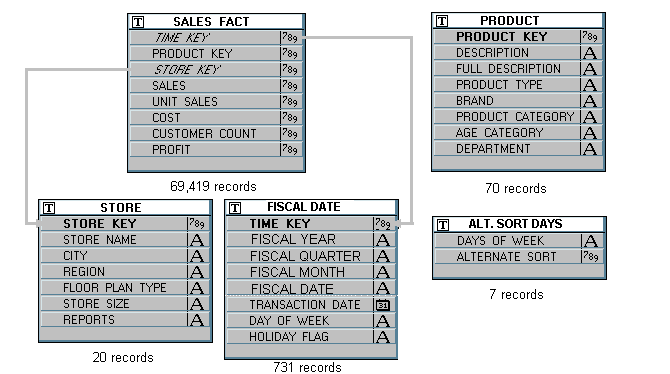
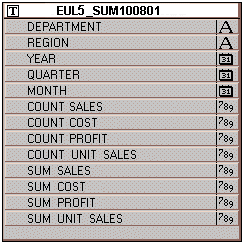
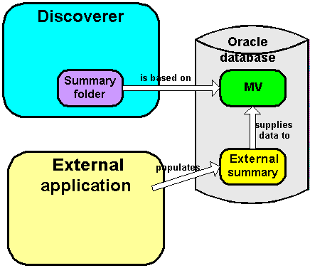

10g (9.0.4)
Part Number B10270-01
Library |
Contents |
Index |
| Oracle Discoverer Administrator Administration Guide (Online Help) 10g (9.0.4) Part Number B10270-01 |
|
This chapter provides additional information about Discoverer summary folders and contains the following topics:
Discoverer created the concept of rewriting a query to use a summary table. The idea of creating a summary table and having the SQL automatically rewritten was patented by Oracle.
It became clear that this functionality would be useful for all database users, so Oracle moved the functionality to the database. Discoverer uses materialized views and query rewrite whenever possible and still supports its original query rewrite to Discoverer summary tables if not.
The long term direction is to work with the server query rewrite mechanism and gradually remove the Discoverer-specific mechanism.
Discoverer uses query rewrite under the following database conditions:
With Oracle 8.1.7 (or later) Enterprise Edition databases, when mapping a view to items in the EUL, Discoverer rewrites the query to use a suitable summary table.
Query rewrite is transparent to the Discoverer end user and provides exactly the same results as queries that run against the detail tables but returns the results in far less time.
Note: Before query rewrite can be used, the option to use summary folders must be set in Discoverer Plus (for further information, see the Oracle Application Server Discoverer Plus User's Guide).
For more information about the rules regarding Oracle 8.1.7 (or later) Enterprise Edition database rewrite scenarios, see the Oracle9i Data Warehousing Guide.
Discoverer rewrites a query to use a summary table instead of the detail data when all of the following conditions are met:
For more information, see Chapter 14, "What are summary combinations?".
For more information about derived items, see Chapter 10, "What are derived items?".
For more information about complex folders, see Chapter 5, "What are complex folders?".
However, you can define queries using fewer joins than specified in the summary table, provided that you select the Detail item values always exist in the master folder radio button in the "Join Wizard: Step 2 dialog".
For more information about summary folder properties, see Chapter 14, "How to edit the properties of summary folders".
For more information, see the Oracle Application Server Discoverer Plus User's Guide.
For more information about the privileges required to create summary folders, see Chapter 14, "What are the prerequisites for creating summary folders manually in Discoverer?".
To view the SQL sent to the database server and the execution plan that the database server uses to return the results data from a query, you use the SQL Inspector dialog in Discoverer Plus. The SQL Inspector dialog displays the SQL and includes the name of the materialized view or the summary table used. For more information about the SQL Inspector dialog, see the Oracle Application Server Discoverer Plus User's Guide.
In OracleAS Discoverer Plus and Oracle Discoverer Desktop, end users can look at SQL being generated by Discoverer to create worksheets. The SQL that is shown in the SQL Inspector is not necessarily the same as that which is sent to the RDBMS.
Discoverer always sends SQL that contains inline views to the RDBMS. Because inline views can be difficult for end users to read, you can configure Discoverer to reformat SQL to make it easier to read. Reformatted SQL is also known as 'flattened' SQL.
To configure how Discoverer displays SQL, edit the SQLType registry setting (for more information, see "Discoverer registry settings" and "How to edit Discoverer Administrator and Discoverer Desktop registry settings").
You can tell whether a query is subject to query rewrite by invoking the SQL Inspector dialog in Discoverer Plus. The table below illustrates how the server execution plan might be displayed when used in a query for which no suitable materialized view exists. In this example the server completes a full table scan of three VIDEO5 data tables to return the result set.
The table below illustrates how the server execution plan might be displayed when used in a query for which a suitable materialized view exists. In this example the server uses the materialized view to return the result set.
| An execution plan that Discoverer displays in the SQL Inspector dialog: Plan tab |
|---|
SELECT STATEMENT SORT GROUP BY TABLE ACCESS FULL NICK.EUL5_MV101510 |
The SQL statement in the table above illustrates how the server can rewrite a query to use a suitable materialized view.
The materialized view is identified in the execution plan by the table name EUL5_MV{identifier}
When Discoverer runs against an Oracle Standard Edition database, Discoverer controls query rewrite to use a suitable summary table. Discoverer displays the SQL sent to the database server in the SQL Inspector dialog: SQL tab.
The table below displays the SQL statement used for a Discoverer worksheet using items from the Video Analysis folder (for more information, see Oracle Discoverer Administrator Tutoria). The SQL statement shows that the summary table EUL5_SUM100750 is referenced.
Discoverer automatically chooses the most appropriate summary table to process the query efficiently. This action is completely transparent to the Discoverer end user.
The next table below displays the SQL statement for the same Discoverer worksheet as above, except that the end user has now drilled down from Year to Month.
The SQL statement shows that Discoverer has rewritten the first part of the query to the summary table EUL5_SUM100750 (as above). However, Discoverer has rewritten the second part of the query (the drill down) to the summary table EUL5_SUM100774.
This example consists of five tables, one of which has almost 70,000 records (for more information, see the figure below). The schema and data are taken from the tutorial data.

Consider a query requiring the following items:
This would require a five-table join and an aggregation of all matching rows in SALES_FACT (the table with almost 70,000 rows). Producing results for the query could take several minutes depending on the capability of the server.
On the other hand, if the query could be rewritten to use a single table that already contains the data for Region, Department, Fiscal Year, and SUM (Profit) (see the Sample summary table figure), then the query would produce an almost instantaneous response.

The Sample summary table above stores the information needed by the query at the month level, and only has to be aggregated to the year level. Discoverer therefore uses a single table rather than aggregating from a five table join and performing a full table scan.
A number of characteristics differ between summary folders when using different database versions and are compared in the following table:
For more information about summary folders, see Chapter 13, "About folders and summary folders in Discoverer" and Chapter 14, "What is manual summary folder creation?". The following table compares summary folders in Oracle Standard Edition databases, and Oracle 8.1.7 (or later) Enterprise Edition databases:
Discoverer creates summary folders based on:
The main differences between summary folders based on Discoverer summary tables/materialized views and summary folders based on external summary tables are outlined below.
The figure below illustrates how Discoverer creates a summary folder that is based on a Materialized View. The Materialized View is supplied with data from an external summary, which is populated by an external application.

When you create a summary using Discoverer Administrator, you specify how the summary is refreshed, which is in one of the following ways:
External summary tables are useful when:
Note: If you are using a non-Oracle database, Discoverer only supports external summary tables and will not create summary folders.
You can create summary folders in Discoverer Administrator by mapping external summary tables or views to EUL items, with Oracle 8.1.7 (or later) Enterprise Edition databases. However, when you map a view to EUL items, materialized views are not created. This is a restriction imposed by Oracle 8.1.7 (or later) Enterprise Edition databases. Where materialized views are not created, query rewrite to Discoverer summary tables is used instead. For more information about query rewrite, see "What is query rewrite?".
The differences in Mapping external summary tables or views to EUL items with Oracle 8.1.7 (or later) Enterprise Edition databases are highlighted in the table below:
Oracle 8.1.7 (or later) Enterprise Edition databases support incremental refresh (when available) enabling you to work with large data warehouses/databases. Parallelism (for more information, see below) is also supported for the refresh operation.
For further information on the conditions required for incremental refresh, see Oracle9i Data Warehousing Guide.
If you export a business area with summary folders from an Oracle Standard Edition database and then import it into an Oracle 8.1.7 (or later) Enterprise Edition database, materialized views need to be created for these summary folders. For the database server to create the materialized views, you must refresh the summary folders in Discoverer.
If you export a business area with summary folders from an Oracle 8.1.7 (or later) Enterprise Edition database and then import it into a Oracle Standard Edition database, Discoverer needs to create summary tables based on the summary folders. For Discoverer to do this, you must refresh the summary folders.
|
|
 Copyright © 2003 Oracle Corporation. All Rights Reserved. |
|